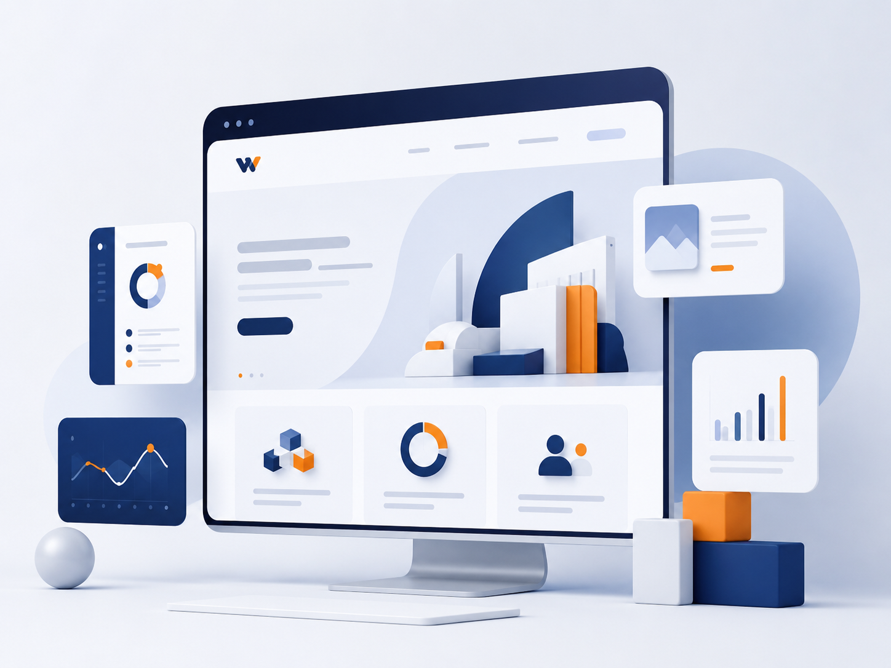
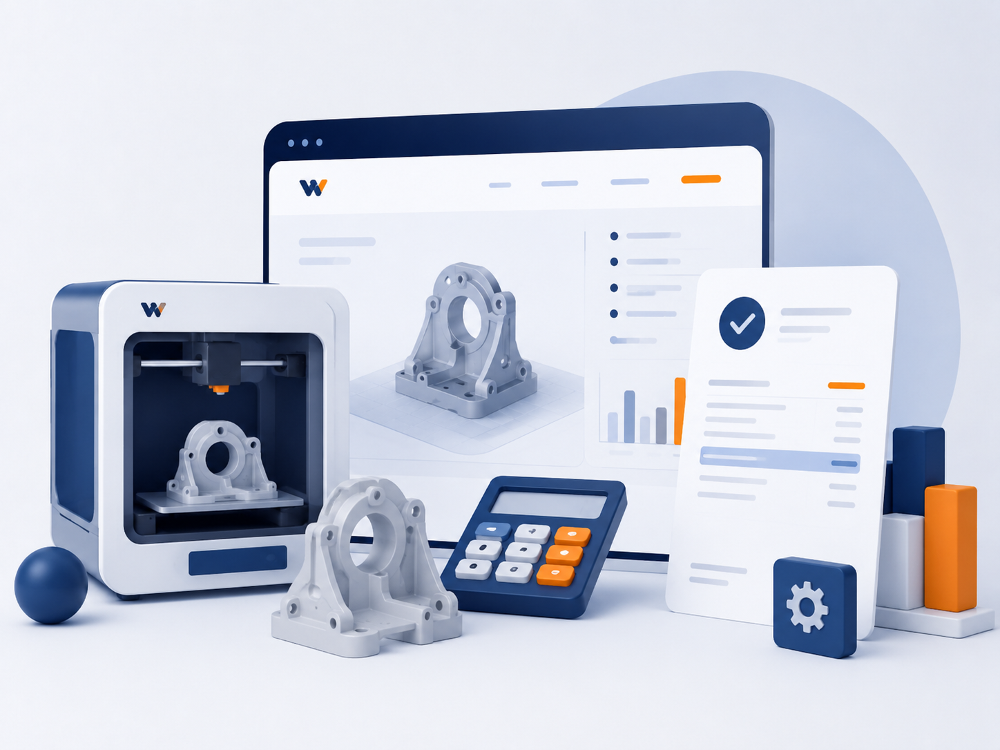
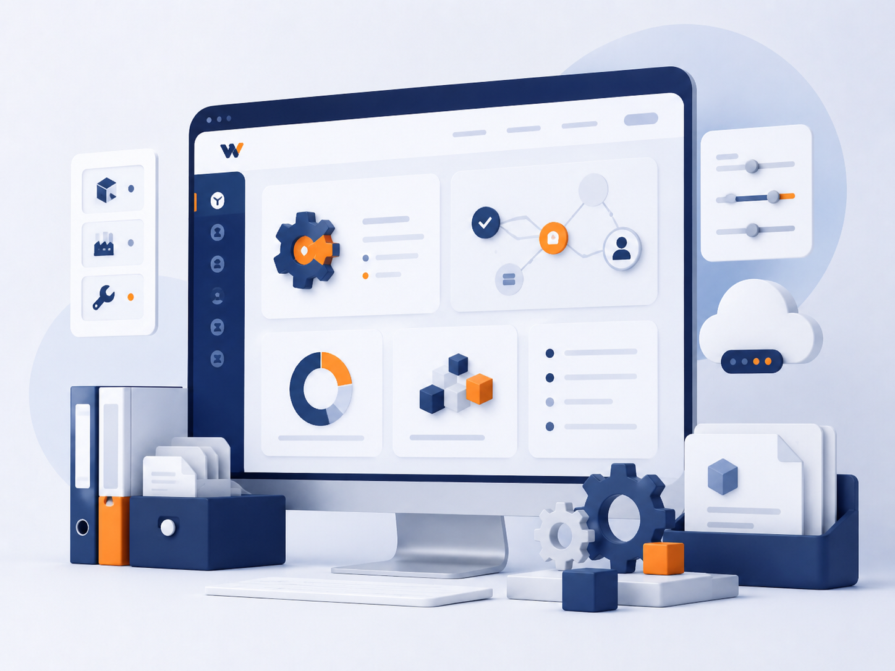

3D-Druckauftrag
Individuelle Kunststoffteile und Rapid Prototyping im FDM-Verfahren. Auf der Detailseite erfährst du alles zu Materialien, Abläufen und typischen Anwendungen.
Hier findest du meine digitalen Werkzeuge, 3D-Druck-Hilfen und praxisnahen Inhalte – verständlich, lokal nutzbar und Schritt für Schritt erweitert.
Neu in der Warenschmiede
Aktuelle Werkzeuge, Downloads und ausgewählte Highlights aus der Warenschmiede.
 Android + WebZeiterfassung PlusArbeitszeit lokal erfassen
Android + WebZeiterfassung PlusArbeitszeit lokal erfassen
 Online Tool3D-Druck Kostenrechner PlusProjekte präzise kalkulieren
Online Tool3D-Druck Kostenrechner PlusProjekte präzise kalkulieren
 Fertigung3D-DruckauftragIndividuelle Teile aus der Werkstatt
Fertigung3D-DruckauftragIndividuelle Teile aus der Werkstatt
 KonstruktionCAD & PrototypingVon der Skizze zum Bauteil
KonstruktionCAD & PrototypingVon der Skizze zum Bauteil
 ServicePC-HilfeRuhige Hilfe rund um den Computer
ServicePC-HilfeRuhige Hilfe rund um den Computer
Ich begleite dich von der Idee bis zum fertigen Teil – transparent, regional verwurzelt und verständlich erklärt. Der Schwerpunkt liegt auf FDM-3D-Druck, passender CAD-Unterstützung sowie ruhiger PC-Hilfe in Donaueschingen und dem Schwarzwald-Baar-Kreis.
Individuelle Kunststoffteile und Rapid Prototyping im FDM-Verfahren. Auf der Detailseite erfährst du alles zu Materialien, Abläufen und typischen Anwendungen.

Von der Skizze bis zur belastbaren Datei: Auf der neuen Seite erfährst du, wie Konstruktion, Feedbackschleifen und Prototypentests ablaufen – inklusive Praxisbeispiel.

Geduldige Unterstützung bei Computerfragen – vor Ort, per Fernwartung oder als Bring-in-Service. Auf der Detailseite liest du Beispiele, Ablauf und die Optionen für Hausbesuche.

Neben Auftragsdrucken und CAD-Services entwickle ich eigene Tools und diese Plattform. Dabei setze ich auf moderne KI-Unterstützung (Gemini, ChatGPT, Jules, Codex), um effiziente Lösungen zu schaffen, die sonst nur großen Teams möglich wären.
Projekte & Eigenentwicklungen
Von dieser Webseite über praktische 3D-Druck-Werkzeuge bis zu neuen Softwareprojekten – hier entstehen Lösungen aus der eigenen Werkstatt.

Die zentrale Warenschmiede-Plattform für Tools, Downloads, Leistungen, Wissen und laufende Eigenentwicklungen.

Browserbasierte Kalkulation für 3D-Druck-Projekte mit Angeboten, Rechnungen, Lieferscheinen und lokalen Projektdaten.

Geplante neue Warenschmiede-Anwendung mit ausgewählten praktischen Funktionen. Umfang und Aufbau werden später eigenständig geplant und entwickelt.
Noch nicht verfügbar
Schick mir deine Idee oder Datei direkt per E-Mail oder WhatsApp. Ich antworte meistens am selben Abend.
Deine Angaben nutze ich nur zur Bearbeitung deiner Anfrage. Keine Weitergabe an Dritte.